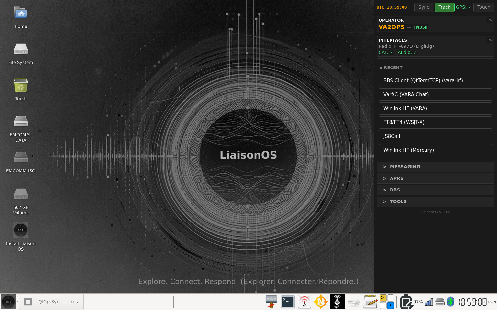

What it is
LiaisonOS is a ready-to-deploy Linux operating system that comes pre-loaded with everything a ham radio operator needs for digital emergency communications. Boot from a USB drive and you're operational — no installation required.
Built on Debian 13 (Trixie) for longer support cycles, no trademark restrictions on ISO redistribution, and direct access to Debian's extensive package repositories.
Two deployment modes: USB Live Boot (boot any PC from a USB drive with full persistence) or permanent installation via Calamares.
Ce que c'est
LiaisonOS est un système d'exploitation Linux prêt à déployer, pré-chargé avec tout ce dont un radioamateur a besoin pour les communications numériques d'urgence. Démarrez depuis une clé USB et vous êtes opérationnel.
Basé sur Debian 13 (Trixie) pour des cycles de support plus longs, sans restrictions de marque sur la redistribution d'images ISO, et avec accès direct aux dépôts de paquets Debian.
Deux modes de déploiement : démarrage USB live (avec persistance complète) ou installation permanente via Calamares.

Key features
Fonctionnalités principales
What's new v2.3.0
GPS Sync Button
A new Sync button in the dashboard lets you synchronize system time directly from a Bluetooth Android device running the LiaisonGPS app, or from a serial GPS receiver (Kenwood TH-D74, TH-D75). One tap to sync — no terminal needed.
System Tray Clock with Seconds
The system tray UTC clock now displays seconds, giving operators a precise time reference at a glance.
QtGpsSync — Completely Redesigned in C++
The Bluetooth GPS tool has been rebuilt from the ground up in C++. It connects over Bluetooth in two modes: Sync mode sets the system time and Maidenhead grid square in one shot, GPS mode provides a continuous live GPS feed. Launch it directly from the dashboard with a single click.
Mercury HF Modem — Beta Integration
Mercury v2, developed by Rhizomatica's HERMES team and sponsored by ARDC, is now included as a beta integration. Client applications (QtTermTCP, Winlink) connect using the VARA protocol name — same client modem protocol, Mercury running underneath. A standalone mode is also available, running Mercury as a direct modem without a BBS client. github.com/Rhizomatica/mercury
Previous — v2.2.7
GPS sync engine redesigned with Unix socket events. Instant green/yellow/red state with pulse blink on fix. No more polling timer or flag file.
Previous — v2.2.6
Bluetooth GPS Sync from Android (LiaisonGPS app) or Kenwood TH-D74/TH-D75. Bluetooth pairings and WiFi credentials saved and restored with USB persistence.
Coming in v2.3.1 — BBS Server Mode with Mercury v2
The next release will introduce BBS server mode support using the Mercury v2 modem. Operators will be able to run a BBS node directly from LiaisonOS, accepting connections from client stations over Mercury HF — no proprietary modem required.
Nouveautés v2.3.0
Bouton Sync GPS
Un nouveau bouton Sync dans le tableau de bord permet de synchroniser l'heure système depuis un appareil Android via l'app LiaisonGPS (Bluetooth), ou depuis un récepteur GPS série (Kenwood TH-D74, TH-D75). Une seule pression — aucun terminal requis.
Horloge de la barre système avec secondes
L'horloge UTC de la barre système affiche maintenant les secondes pour une référence de temps précise.
QtGpsSync — Entièrement recodé en C++
L'outil GPS Bluetooth a été reconstruit de zéro en C++. Il se connecte via Bluetooth en deux modes : mode Sync règle l'heure système et le locator Maidenhead en une seule opération, mode GPS fournit un flux GPS continu en temps réel. Lancez-le directement depuis le tableau de bord en un clic.
Modem HF Mercury — Intégration bêta
Mercury v2, développé par l'équipe HERMES de Rhizomatica et sponsorisé par ARDC, est maintenant intégré en version bêta. Les applications clientes (QtTermTCP, Winlink) se connectent via le nom de protocole VARA — même protocole client, Mercury en dessous. Un mode autonome est également disponible, faisant tourner Mercury comme modem direct sans client BBS. github.com/Rhizomatica/mercury
Précédente — v2.2.7
Moteur GPS refondu avec événements Unix socket. États instantanés vert/jaune/rouge avec clignotement au fix.
Précédente — v2.2.6
Synchronisation GPS Bluetooth depuis Android (app LiaisonGPS) ou Kenwood TH-D74/TH-D75. Jumelages Bluetooth et identifiants WiFi sauvegardés et restaurés avec la persistance USB.
À venir en v2.3.1 — Mode serveur BBS avec Mercury v2
La prochaine version introduira le mode serveur BBS avec le modem Mercury v2. Les opérateurs pourront faire tourner un nœud BBS directement depuis LiaisonOS, acceptant les connexions des stations clientes via Mercury HF — sans modem propriétaire.
VARA HF/FM & VarAC
VARA HF/FM — Pre-installed
VARA HF and VARA FM modems are pre-installed with written permission from José Alberto Nieto Ros (EA5HVK). Users must purchase their own license from rosmodem.wordpress.com to unlock full speed. The pre-installed version runs in demo mode until registered.
VarAC — Pre-installed
VarAC is pre-installed and ready to use at first boot. It runs through Wine alongside VARA HF/FM for a complete digital communications setup out of the box. License presented on first launch (Limited Distribution Agreement with 4Z1AC).
VARA HF/FM & VarAC
VARA HF/FM — Pré-installé
VARA HF et VARA FM sont pré-installés avec la permission écrite de José Alberto Nieto Ros (EA5HVK). Les utilisateurs doivent acheter leur propre licence sur rosmodem.wordpress.com pour débloquer la pleine vitesse.
VarAC — Pré-installé
VarAC est pré-installé et prêt à l'emploi au premier démarrage via Wine. Licence présentée au premier lancement (accord de distribution limitée avec 4Z1AC).
16 operational modes
16 modes opérationnels
Winlink
- VARA HF
- VARA FM
- Packet
- ARDOP
Chat
- JS8Call
- VarAC
- Fldigi
- Chattervox
- Chattervox BT
BBS
- Paracon
- QtTermTCP
- BBS Server (LinBPQ)
APRS
- YAAC Client
- YAAC BT
- APRS Digipeater
OtherAutre
- FT8/FT4 (WSJT-X)
- Direwolf KISS TNC
Supported radios
The DigiRig Mobile interface is supported and significantly expands radio compatibility — any radio that works with DigiRig works with LiaisonOS. The table below lists radios tested directly by the team. For a full DigiRig compatibility list visit digirig.net.
Radios supportées
L'interface DigiRig Mobile est supportée et étend considérablement la compatibilité radio — toute radio fonctionnant avec DigiRig fonctionne avec LiaisonOS. Le tableau ci-dessous liste les radios testées directement par l'équipe. Pour la liste complète de compatibilité DigiRig, visitez digirig.net.
| VendorFabricant | ModelsModèles | InterfaceInterface |
|---|---|---|
| Icom | IC-705, IC-7100, IC-7200, IC-7300, IC-9700 | USB CAT + audio |
| Yaesu | FT-710, FT-857D, FT-891, FT-897D, FT-991A, FTX-1 | USB CAT + audio |
| Xiegu | X6100, G90 | USB / DigiRig |
| Elecraft | KX-2 | DigiRig Mobile |
| QRP Labs | QMX | USB CAT |
| BG2FX | FX-4CR | USB CAT + audio |
| Kenwood | TH-D74, TH-D75 | Bluetooth KISS TNC |
| BTECH | UV-PRO | Bluetooth KISS TNC |
| VGC | VR-N76 | Bluetooth KISS TNC |
Why Debian?
No trademark restrictions — we can freely distribute pre-built ISO images. Longer, more stable release cycles (3–5 years LTS). Direct access to Debian's extensive package repositories including the Debian Ham Radio Pure Blend — JS8Call, WSJTX, fldigi, Direwolf all properly packaged. Community-driven without corporate overhead.
Pourquoi Debian ?
Aucune restriction de marque — nous pouvons distribuer librement des images ISO pré-construites. Cycles de publication plus longs et stables (3 à 5 ans LTS). Accès direct aux dépôts Debian incluant le Debian Ham Radio Pure Blend — JS8Call, WSJTX, fldigi, Direwolf tous correctement empaquetés. Communauté sans contraintes corporatives.
The ham radio spirit
This project isn't a closed product. It's a vanilla starting point — a reusable, customizable foundation that radio clubs, regional groups, emergency organizations, and individual operators can fork and adapt to their own needs. Share the knowledge, build the community.
L'esprit radioamateur
Ce projet n'est pas un produit fermé. C'est un point de départ — une base réutilisable et personnalisable que les clubs radio, groupes régionaux, organisations d'urgence et opérateurs individuels peuvent forker et adapter à leurs besoins. Partagez les connaissances, bâtissez la communauté.
Contributing
Open-source project. Contributions, bug reports, and feature requests are welcome.
Contribuer
Projet open-source. Les contributions, rapports de bogues et demandes de fonctionnalités sont les bienvenus.
Acknowledgments
Remerciements
- The Debian Ham Radio Team — Maintaining excellent ham radio packages
- José Alberto Nieto Ros (EA5HVK) — VARA HF/FM modem development
- Irad Deutsch (4Z1AC) and the VarAC Development Team — VarAC chat application
- Andrew Pavlin (KA2DDO) — YAAC (Yet Another APRS Client)
- Martin Hebnes Pedersen (LA5NTA) — Pat Winlink
- John Wiseman (G8BPQ) — LinBPQ / QtTermTCP
- Martin F N Cooper — Paracon
- David Freese (W1HKJ) — fldigi
- Joe Taylor (K1JT) and the WSJT Development Team — WSJT-X
- Gaston Gonzalez (KT7RUN) — Original EmComm Tools OS Community concept
License
This project is a derivative work of EmComm Tools OS Community, licensed under the Microsoft Public License (Ms-PL). In compliance with Ms-PL Section 3(C), we retain all copyright, patent, trademark, and attribution notices from the original software. The switch from Ubuntu to Debian eliminates the Ubuntu trademark restrictions that previously prevented distribution of pre-built images.
Licence
Ce projet est une œuvre dérivée d'EmComm Tools OS Community, licenciée sous la Microsoft Public License (Ms-PL). Conformément à la section 3(C) de la Ms-PL, nous conservons tous les avis de droit d'auteur, de brevet, de marque et d'attribution du logiciel original.